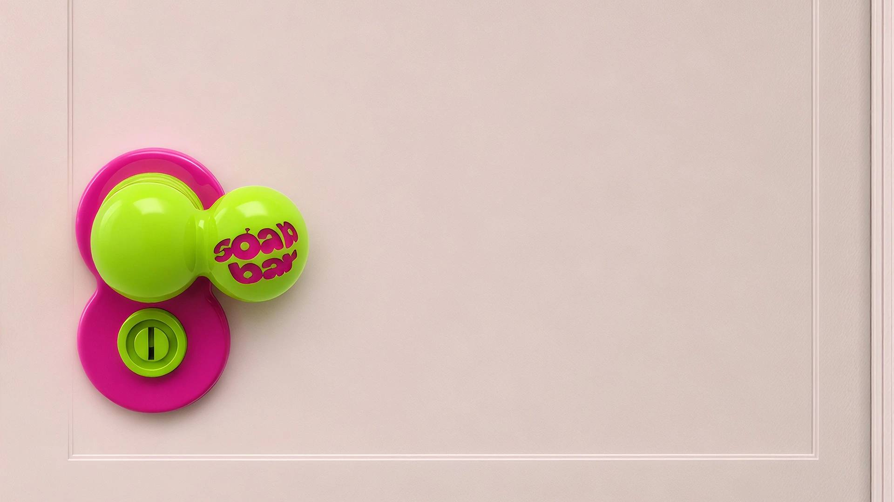
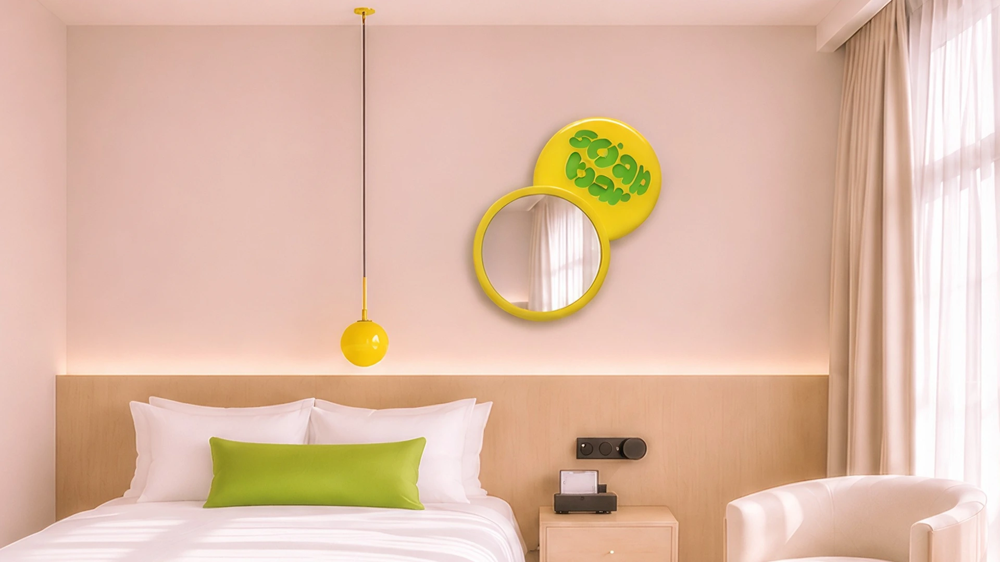
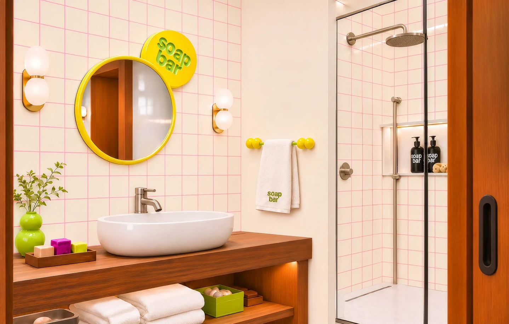
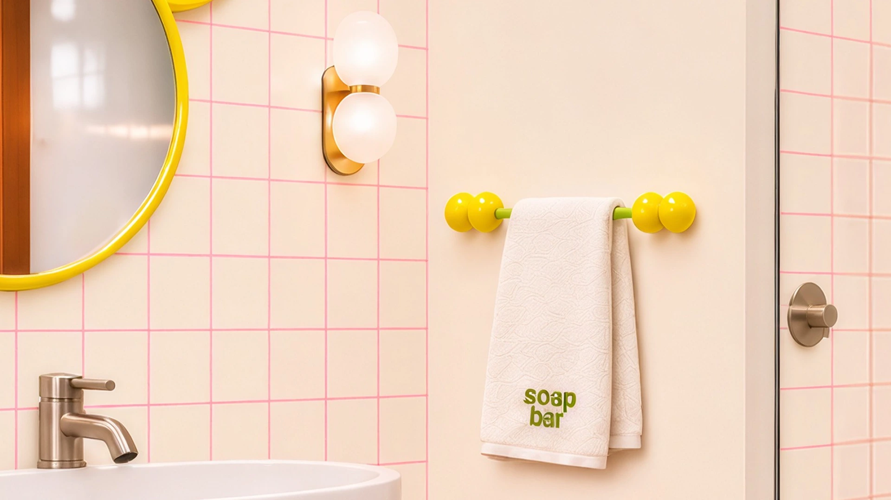
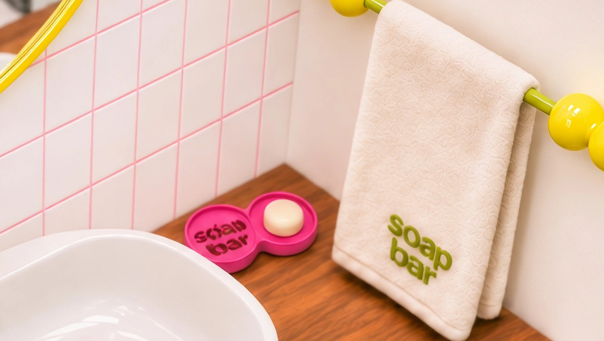
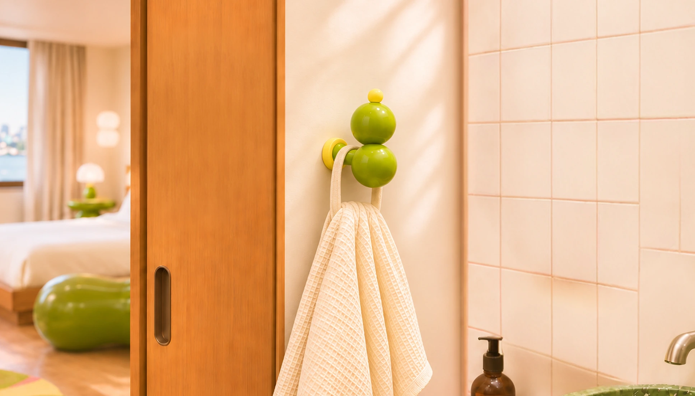

Hotel SOAP BAR
두 개의 비눗방울이 맞닿은 형태를 모티브로 한 문손잡이이다 손으로 감싸 쥐는 둥근 볼륨과 매끄러운 곡선에 선명한 라임 그린과 핑크의 대비를 더해 경쾌한 인상을 주었다 표면의 SOAP BAR 레터링과 하단 잠금장치까지 이어지는 버블 형태는 호텔의 개성을 담아 문을 여는 순간부터 유쾌한 경험을 전한다.

두 개의 비눗방울이 겹쳐진 모습을 모티브로 한 거울이다. 원형 거울과 SOAP BAR 레터링을 담은 원형 패널을 비스듬히 연결해 경쾌한 균형감을 표현했다 부드럽게 둥근 프레임에 선명한 옐로우와 그린을 더해, 공간에 생동감을 주는 포인트 오브제로 디자인했다.


비눗방울이 맞닿은 형태의 지지대와 가로 봉을 결합한 벽걸이형 수건걸이이다 둥근 옐로우 볼륨과 그린 컬러의 봉이 대비를 이루며 욕실에 경쾌한 포인트를 더한다 수건을 펼쳐 걸 수 있는 실용적인 구조에 버블 모티브를 적용해, 호텔의 다른 오브제들과 통일감 있게 디자인했다.

두 개의 비눗방울이 이어진 형태를 모티브로 한 비누받침대이다. 크기가 다른 두 공간에 비누와 스펀지를 나누어 보관할 수 있으며, ‘SOAP BAR’ 레터링 형태의 배수 구멍으로 물이 빠져나가도록 설계했다. 가장자리를 둥글게 감싼 테두리와 선명한 핑크 컬러가 욕실에 유쾌한 포인트를 더한다.

0107